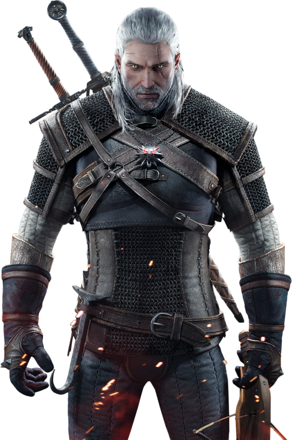

A CD Projekt S.A. é uma publicadora e distribuidora polonesa de jogos eletrônicos sediada em Varsóvia, Mazóvia. Ela foi fundada em 1994 por Marcin Iwiński e Michał Kiciński. A principal divisão da empresa é o estúdio de desenvolvimento CD Projekt RED, o qual foi formado em 2002 e é conhecido por desenvolver a série The Witcher. Além disso, a companhia também é dona do GOG.com, um serviço de distribuição digital próprio lançado em 2008.
Wild Hunt (em polonês: Wiedźmin 3: Dziki Gon) é um jogo eletrônico de ação do subgênero RPG desenvolvido pela CD Projekt RED e lançado no dia 19 de maio de 2015 para as plataformas Microsoft Windows, PlayStation 4 e Xbox One, sendo o terceiro título da série de jogos The Witcher. Ele sucede The Witcher (2007) e The Witcher 2: Assassins of Kings (2011), que foram baseados na série de livros de fantasia Wiedźmin, do escritor polonês Andrzej Sapkowski.
Ambientado em um gigantesco cenário medieval que dá liberdade total ao jogador, o game, que possui uma jogabilidade não linear e é jogado através de uma perspectiva em terceira pessoa, tem o lendário bruxo Geralt de Rívia como seu protagonista, o qual inicia uma longa jornada pelos Reinos do Norte. Enquanto a ordem planetária enfrenta uma grande mudança, com o misterioso e macabro exército de cavaleiros vermelhos conhecido como a "Caçada Selvagem" deixando somente sangue e ruína por onde passa, o jogador terá de enfrentar diversos perigos usando espadas e magia num mundo em crise à medida que interage com outros personagens e completa missões para o progresso da história, podendo viajar a pé, a barco, ou montado em Carpeado, o cavalo inseparável de Geralt.
A Rockstar Games, Inc. (também conhecida como Rockstar NYC e anteriormente chamada de BMG Interactive) é uma produtora e publicadora de jogos eletrônicos fundada em 1998 por Sam Houser e Dan Houser, em Nova Iorque, nos Estados Unidos. Conhecida por ter criado grandes nomes dos jogos eletrônicos, a Rockstar é criadora das famosas séries Grand Theft Auto, Bully,Red Dead e Midnight Club. Sua sede fica em New York (Nova Iorque), mas é formada também por vários estúdios que foram comprados, renomeados ou então construídos pela própria empresa, como é o caso da empresa irmã Take Two Interactive. A sede da Rockstar está localizada na Broadway, na vizinhança de NoHo, em Nova York, parte dos escritórios da Take Two, e é onde estão os departamentos de marketing, relações públicas e desenvolvimento de produtos.
San Andreas é um jogo eletrônico de ação-aventura desenvolvido pela Rockstar North e publicado pela Rockstar Games. É o quinto título principal da série Grand Theft Auto e foi lançado em outubro de 2004 para PlayStation 2 e em junho de 2005 para Xbox e Microsoft Windows. O jogo se passa no estado ficcional de San Andreas, com a história seguindo Carl Johnson em sua luta para lidar com guerras de gangues, confrontos com policiais e as relações com sua família e amigos. O mundo aberto permite que os jogadores naveguem livremente pelas áreas rurais e urbanas de San Andreas. A jogabilidade é mostrada em uma perspectiva de terceira pessoa e o mundo pode ser atravessado a pé ou com veículos. Os jogadores controlam CJ (Carl Johnson), com muitas missões envolvendo tiro e direção. O enredo foi baseado em vários eventos reais que ocorreram em Los Angeles, incluindo a rivalidade entre as gangues de rua Bloods, Crips e hispânicas, a epidemia do tráfico de crack, o Escândalo Rampart do Departamento de Polícia de Los Angeles e também os distúrbios de Los Angeles em 1992. A equipe de desenvolvimento realizou grandes pesquisas com o objetivo de reproduzir as diferentes cidades dentro do jogo.

Red Dead Redemption 2 é um jogo eletrônico de ação-aventura desenvolvido e publicado pela Rockstar Games. É o terceiro título da série Red Dead e uma prequela de Red Dead Redemption, tendo sido lançado em outubro de 2018 para PlayStation 4 e Xbox One e em novembro de 2019 para Microsoft Windows e Google Stadia. A história se passa em 1899 em uma representação ficcional do oeste, meio-oeste e sul dos Estados Unidos e acompanha o fora da lei Arthur Morgan, que precisa lidar com o declínio do Velho Oeste e sobreviver à perseguição de forças governamentais, gangues rivais e outros adversários. A jogabilidade é apresentada tanto em uma perspectiva em primeira quanto em terceira pessoa, com o jogador sendo livre para explorar e interagir com o mundo aberto. Elementos de jogabilidade incluem tiroteios, assaltos, caça, cavalgadas, interação com personagens não jogáveis e gerenciamento da honra do protagonista por meio de escolhas morais e atos. Um sistema de recompensa similar àquele presente na série Grand Theft Auto governa as respostas da polícia e caçadores de recompensa aos crimes cometidos pelo jogador. Um modo multijogador chamado de Red Dead Online estreou em novembro de 2018.
Mojang é uma desenvolvedora de jogos eletrônicos sediada em Estocolmo, Suécia, conhecida principalmente pela criação e desenvolvimento de Minecraft. Foi fundada por Markus Persson, Jakob Porser e Carl Manneh em 2009. Em 15 de Setembro de 2014, a Mojang foi comprada por US$ 2,5 bilhões pela Microsoft.
Minecraft é um jogo eletrônico tipo sandbox e independente de mundo aberto que permite a construção usando blocos (cubos) dos quais o mundo é feito. Foi criado por Markus "Notch" Persson. O desenvolvimento de Minecraft começou por volta do dia 10 de maio de 2009. A jogabilidade foi baseada nos jogos Dwarf Fortress, Dungeon Keeper e Infiniminer. Foi vencedor do prêmio VGA 2011 de jogos independentes.
A Electronic Arts Inc., comumente chamada de EA, é uma empresa desenvolvedora e distribuidora de jogos eletrônicos, situada em Redwood City, estado da Califórnia, nos Estados Unidos. Foi fundada em 28 de maio de 1982 por Trip Hawkins, período em que foi pioneira no mercado de jogos para computadores domésticos.
FIFA 19 é um jogo eletrônico de futebol desenvolvido (e) publicado pela EA Sports, que foi lançado localmente em 28 de setembro de 2018. Este é terceiro game da franquia a usar a engine de jogo da Frostbite para Xbox One, PS4 e PC. O game oferece varios modos de jogo como o modo Carreira, A Jornada e o popular Ultimate Team, sendo que o ultimo recebeu diversas novidades para a ediçao deste ano. Além dos modos de jogo, o game também tem como novidade o licenciamento da principal competiçao de clubes da europa, a UEFA Champions League.
Referências - Instituto Federal Catarinense Campus Fraiburgo - 2019